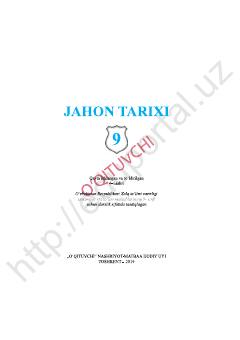

9J9-sinf o'quvchilari uchun jahon tarixi fanidan rasmiy darslik.
Ushbu darslik umumiy o'rta ta'lim maktablarining 9-sinf o'quvchilari uchun jahon tarixi fanidan mo'ljallangan bo'lib, turli tarixiy davrlar va voqealarni yoritadi. Kitobda XIX asr oxiri va XX asr boshlaridagi muhim tarixiy jarayonlar haqida ma'lumotlar berilgan.